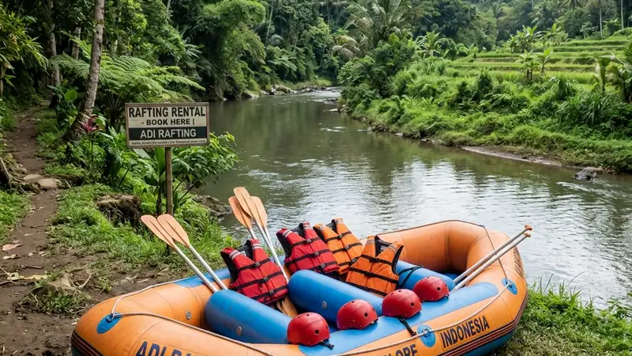

Sewa perahu karet rafting adalah layanan penyewaan perahu karet beserta perlengkapan dan pemandu untuk kegiatan arung jeram di sungai. Layanan ini umumnya sudah mencakup peralatan keselamatan dan instruktur berpengalaman.
- Sewa perahu karet rafting biasanya sudah termasuk perahu, dayung, pelampung, helm, dan pemandu.
- Harga sewa dipengaruhi oleh jenis paket, jumlah peserta, dan tingkat kesulitan jalur sungai.
- Operator terpercaya wajib memiliki standar keselamatan dan pemandu bersertifikat.
- Persiapan fisik dan mengikuti briefing keselamatan sangat memengaruhi kenyamanan saat rafting.
- Memilih operator yang tepat mengurangi risiko dan meningkatkan pengalaman rafting secara keseluruhan.
Apa Itu Sewa Perahu Karet Rafting?
Sewa perahu karet rafting adalah layanan komersial yang menyediakan perahu karet, perlengkapan pendukung, dan pemandu untuk kegiatan menyusuri arus sungai. Layanan ini menjadi pilihan utama karena peserta tidak perlu membeli peralatan sendiri.
Secara umum, layanan ini ditujukan bagi wisatawan individu, keluarga, komunitas, maupun instansi yang ingin melakukan aktivitas arung jeram tanpa harus memiliki peralatan pribadi. Penyedia jasa biasanya menawarkan paket yang sudah mencakup perahu karet, dayung, pelampung, helm, dan pendampingan pemandu selama kegiatan berlangsung.
Layanan sewa perahu karet rafting umumnya digunakan untuk kegiatan wisata rekreasi, acara kebersamaan komunitas atau kantor, hingga kegiatan pelatihan kerja sama tim. Manfaat utamanya adalah kemudahan akses, karena peserta cukup datang ke lokasi tanpa perlu membawa peralatan sendiri, dan keamanan yang lebih terjamin karena didampingi pemandu berpengalaman.
Untuk Siapa Layanan Sewa Perahu Karet Rafting Cocok?
Layanan sewa perahu karet rafting cocok untuk wisatawan pemula hingga berpengalaman, keluarga, komunitas, dan kelompok kantor yang ingin menikmati arung jeram tanpa repot menyiapkan peralatan sendiri.
Layanan ini secara umum terbagi menjadi beberapa segmen pengguna:
- Wisatawan individu atau keluarga yang ingin mencoba pengalaman baru bersama anggota keluarga.
- Komunitas atau kelompok pertemanan yang mencari aktivitas outdoor bersama.
- Instansi atau perusahaan yang menggunakan rafting sebagai kegiatan team building.
- Sekolah atau organisasi kepemudaan untuk kegiatan pelatihan fisik dan kerja sama tim.
Setiap segmen biasanya memiliki kebutuhan paket yang berbeda, mulai dari jalur yang lebih ringan untuk pemula hingga jalur dengan tingkat kesulitan lebih tinggi bagi peserta yang sudah berpengalaman.
Apa Saja yang Termasuk dalam Paket Sewa Perahu Karet Rafting?
Paket sewa perahu karet rafting umumnya mencakup perahu karet, dayung, pelampung, helm, pemandu, dan asuransi kecelakaan dasar selama kegiatan berlangsung.
Komponen yang biasanya disertakan dalam paket sewa antara lain:
- Perahu karet sesuai kapasitas peserta.
- Dayung untuk setiap peserta.
- Pelampung atau life jacket standar keselamatan.
- Helm pelindung kepala.
- Pemandu atau instruktur yang mendampingi selama perjalanan.
- Dokumentasi kegiatan, tergantung kebijakan operator.
- Transportasi antar-jemput dari titik kumpul ke titik start, tergantung paket yang dipilih.
Sebagian operator juga menyediakan fasilitas tambahan seperti makan siang, kaos, atau sertifikat kegiatan sebagai bagian dari paket tertentu. Rincian fasilitas ini dapat bervariasi tergantung penyedia jasa dan tingkat harga paket yang dipilih.
Bagaimana Cara Kerja Sewa Perahu Karet Rafting?
Proses sewa perahu karet rafting umumnya dimulai dari pemesanan, briefing keselamatan, pemasangan perlengkapan, hingga pelaksanaan kegiatan di sungai bersama pemandu.
Secara umum, alur layanan berjalan sebagai berikut:
- Peserta melakukan reservasi, baik secara langsung maupun daring, dengan menyebutkan jumlah peserta dan tanggal kegiatan.
- Peserta datang ke titik kumpul pada waktu yang telah ditentukan.
- Pemandu memberikan briefing keselamatan dan teknik dasar mendayung sebelum kegiatan dimulai.
- Peserta mengenakan perlengkapan keselamatan seperti pelampung dan helm.
- Kegiatan rafting berlangsung di sepanjang jalur sungai yang telah ditentukan, didampingi pemandu di setiap perahu.
- Setelah kegiatan selesai, peserta kembali ke titik akhir untuk pengembalian perlengkapan.
Durasi kegiatan dapat bervariasi tergantung panjang jalur dan tingkat kesulitan sungai yang dipilih.
Apa Saja Faktor yang Memengaruhi Harga Sewa Perahu Karet Rafting?
Harga sewa perahu karet rafting umumnya dipengaruhi oleh jumlah peserta, panjang jalur, tingkat kesulitan sungai, dan fasilitas tambahan dalam paket.
Beberapa faktor utama yang memengaruhi biaya antara lain:
- Jumlah peserta dalam satu perahu, karena sebagian operator menetapkan harga per orang dengan minimal jumlah tertentu.
- Panjang dan tingkat kesulitan jalur sungai yang dipilih.
- Fasilitas tambahan seperti dokumentasi, transportasi, atau konsumsi.
- Musim dan hari kunjungan, karena harga dapat berbeda pada akhir pekan atau musim liburan.
- Reputasi dan standar layanan operator, karena operator dengan standar keselamatan lebih tinggi umumnya menetapkan tarif yang sesuai dengan kualitas layanan.
Harga sewa perahu karet rafting dapat bervariasi cukup luas antar penyedia jasa, sehingga disarankan membandingkan beberapa operator sebelum memutuskan.
Apa Saja Kesalahan Umum Saat Menyewa Perahu Karet Rafting?
Kesalahan umum saat menyewa perahu karet rafting meliputi tidak memeriksa standar keselamatan operator, mengabaikan briefing, dan tidak menyesuaikan jalur dengan kemampuan fisik peserta.
Beberapa kesalahan yang sering terjadi antara lain:
- Tidak memastikan operator memiliki pemandu bersertifikat dan perlengkapan yang layak pakai.
- Mengabaikan sesi briefing keselamatan karena dianggap tidak penting.
- Memilih jalur dengan tingkat kesulitan tinggi tanpa mempertimbangkan kondisi fisik atau pengalaman peserta.
- Tidak membawa pakaian ganti atau perlengkapan pribadi yang sesuai untuk kegiatan di air.
- Tidak menanyakan kebijakan pembatalan atau perubahan jadwal sebelum melakukan pemesanan.
Menghindari kesalahan-kesalahan tersebut dapat membantu memastikan kegiatan rafting berjalan lebih aman dan nyaman.
Apa Tips Memilih Operator Sewa Perahu Karet Rafting yang Aman?
Tips memilih operator sewa perahu karet rafting yang aman meliputi memeriksa legalitas usaha, kualifikasi pemandu, kondisi perlengkapan, serta ulasan dari pengguna sebelumnya.
Beberapa hal yang perlu diperhatikan saat memilih operator:
- Pastikan operator memiliki izin usaha dan mengikuti standar keselamatan yang berlaku.
- Periksa apakah pemandu memiliki sertifikasi atau pelatihan penyelamatan air.
- Perhatikan kondisi fisik perahu karet dan perlengkapan keselamatan yang digunakan.
- Baca ulasan atau testimoni dari peserta sebelumnya sebagai bahan pertimbangan.
- Tanyakan secara jelas mengenai cakupan asuransi dan prosedur darurat yang diterapkan operator.
Berdasarkan data internal industri wisata petualangan, sebagian besar keluhan peserta rafting terkait pengalaman kurang memuaskan berasal dari operator yang tidak menjelaskan prosedur keselamatan secara jelas sebelum kegiatan dimulai, menurut laporan asosiasi wisata minat khusus periode 2024-2025.
Perbandingan Jenis Paket Sewa Perahu Karet Rafting
Jenis paket sewa perahu karet rafting umumnya dibedakan berdasarkan tingkat kesulitan jalur, durasi kegiatan, dan fasilitas tambahan yang disertakan.
- Paket reguler atau pemula, dengan jalur relatif landai dan cocok untuk peserta baru.
- Paket menengah, dengan jalur yang memiliki jeram lebih bervariasi untuk peserta yang sudah pernah mencoba rafting.
- Paket ekstrem, dengan tingkat kesulitan tinggi dan biasanya mensyaratkan pengalaman atau kondisi fisik tertentu.
- Paket grup atau korporat, yang dirancang untuk kegiatan kebersamaan dengan fasilitas tambahan seperti dokumentasi dan konsumsi.
Pemilihan paket sebaiknya disesuaikan dengan tujuan kegiatan, jumlah peserta, dan tingkat pengalaman masing-masing peserta.
FAQ
Apakah sewa perahu karet rafting aman untuk pemula?
Sewa perahu karet rafting umumnya aman untuk pemula selama memilih jalur dengan tingkat kesulitan rendah dan mengikuti arahan pemandu berpengalaman.
Apa saja yang perlu dibawa saat menyewa perahu karet rafting?
Peserta umumnya disarankan membawa pakaian ganti, sandal gunung atau sepatu yang tidak licin, serta perlengkapan pribadi seperti handuk dan tas kedap air.
Berapa jumlah minimal peserta untuk sewa perahu karet rafting?
Jumlah minimal peserta bervariasi tergantung operator, namun umumnya berkisar antara lima hingga enam orang per perahu.
Arya
penulis artikel yang sudah berpengalaman di dalam dunia wisata outbound Batu Malang.